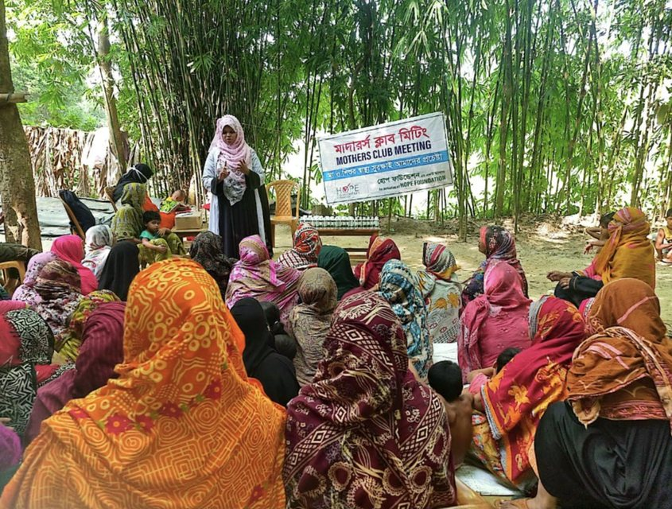
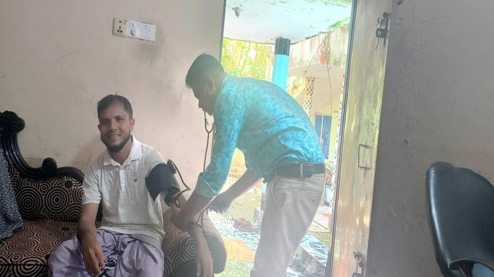

Global Health
Upskill frontline workers.Transform global health.


Doctor AI is a premier clinical AI company that blends a humanistic approach to medicine with an excellent clinical decision support tool. Patents across the entire health AI space.
HOPE Foundation pilot · Cox's Bazar, Bangladesh
Healthcare at the doorstep.
Imagine seeing a doctor means missing a full day of wages, or losing your job. Now care comes to your doorstep.
Together with HOPE Foundation for Women & Children of Bangladesh, community health workers carry Doctor AI into village homes, reaching people who would otherwise never see a doctor.
The sick often go too late.
Many medications that could extend life are not prohibitively costly, yet people go undiagnosed for years while unmanaged chronic disease claims lives across the country.
Traditional care can't reach them.
Doctors are scarce and clinics are far away. Without cellphones or literacy, telemedicine is out of reach too.
How a visit works
- 1
Check-up
A community health worker arrives at the door and takes your vitals, free of charge.
- 2
Ask
A Doctor AI-powered tablet guides them to ask questions and take a history like a seasoned physician.
- 3
Review
A standardized note with a diagnosis and treatment plan goes to a physician dashboard. Miles away, the physician reviews it in 2-3 minutes and signs.
- 4
Treat
The prescription prints on a portable printer, right at the doorstep. Serious cases are referred to the right level of care, easing the load on crowded free clinics.
A scalable solution for the excluded.
Every visit also builds an electronic medical record in a community that has none, and collects household-level disease data for public health and epidemiological agencies. Our field team at the HOPE Foundation for Women & Children of Bangladesh runs this workflow every day.